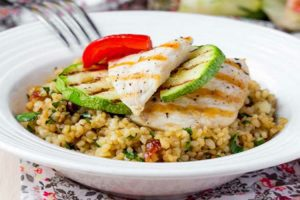
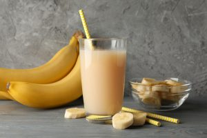

Alimentación
Como es de saber, la alimentación es fundamental para poder llegar a los objetivos individuales establecidos. Por ello, a continuación vas a poder encontrar recetas, tips, entre otras cosas.
Superávit calórico
El superávit calórico se produce con un balance energético positivo (consumir más calorías que las que se gasta habitualmente), ese que el excedente calórico genera la síntesis de proteínas, lo cual acelera la recuperación y el crecimiento muscular. El superávit calórico ayuda a los deportistas que buscan ganar masa muscular, dado que proporciona el excedente de energía necesario para impulsar la síntesis de proteínas, acelerando la recuperación muscular y promoviendo el crecimiento. Además, mejora el rendimiento físico al proporcionar la energía adicional requerida durante entrenamientos intensos.
Pollo al horno, con vegetales asados y quinua.
Necesitas:
- 1 pechuga de pollo deshuesada y sin piel.
- 1 calabacín mediano, cortado en rodajas gruesas.
- Medio pimiento rojo cortado en trozos.
- Media cebolla morada cortada en rodajas.
- Media taza de quinua.
- 1 diente de ajo.
- 1 cucharada de aceite de oliva.
- 1 cucharadita de romero fresco picado.
- Sal y pimienta a gusto.
Procedimiento:
- Precalienta el horno a fuego medio-alto. Mientras, pon a hervir 1 taza de agua en un recipiente.
- Cuando el agua hierva, agregue la quinua previamente lavada y el diente de ajo picado en el agua. Tapa el recipiente mientras se cocina a fuego lento,
hasta que se consuma todo el agua y la quinua esté cocida. Aproximadamente 15-20 minutos. - Mezcle los vegetales con aceite de oliva, romero, sal y pimienta en un tazón grande.
- Asa los vegetales en el horno durante unos 10-15 minutos hasta que estén tiernos y dorados.
- Mientras tanto, sazona las pechuga de pollo con sal y pimienta y hornear durante unos 15 minutos por cada lado, o hasta que estén cocidas por completo.
- Sirve el pollo con los vegetales asados y la quinua.
Batido cremoso de proteína
Necesitas:
- 1 plátano maduro
- 1 taza de leche
- 1 cucharada de mantequilla de maní
- Scoop entero de proteína en polvo
- Hielo, para darle espesor
Procedimiento:
- Pela la banana y córtala en dos mitades.
- Mezcle todos los ingredientes en una licuadora hasta que estén suaves y cremosos.
- ¡Listo! Disfruta como un batido post-entrenamiento para ayudar a tus músculos a recuperarse y crecer.
Déficit calórico
El déficit calórico se define como el estado en el que una persona consume menos calorías de las que su cuerpo necesita para mantener su peso actual. Este déficit obliga al cuerpo a utilizar sus reservas de energía, principalmente la grasa almacenada, para cubrir la diferencia, lo que resulta en una pérdida de peso.
Filetes de pollo con harissa y judías verdes
Ingredientes:
- 4 contramuslos de pollo abiertos
- 150 g de tomates cherrys
- 150 g de judías verdes redondas
- Una cebolla
- 4 cucharadas de harissa
- Aceite de oliva, sal y pimienta
Elaboración:
- Precalentar el horno a 200 ºC. Salpimentar los filetes de pollo y pintar con la salsa harissa. Enrollar y cerrar con un palillo.
- Pelar y cortar la cebolla en rodajas. Poner en bandeja de horno las rodajas de cebolla y sobre éstas los rollos de pollo. Pintar con aceite de oliva y meter a horno precalentado durante 30 minutos.
- En un bol poner una cucharadita de harissa y dos de aceite de oliva con las judías verdes y los tomates cherry. Salpimentar y remover todo. Diez minutos antes de retirar el pollo meter las verduras al horno y mantenerlas hasta el final. Servir el pollo con las judías y tomates.
Huevos pasados por agua con tostas
Ingredientes:
- 4 huevos
- 4 rebanadas de pan
- 1 dl de nata para montar
- Una cebolla
- Una nuez moscada
- Cebollino
- Aceite de oliva, sal y pimienta
Elaboración:
- Poner en un bol la nata con el cebollino, un poco de nuez moscada, sal y pimienta negra. Batir con varillas hasta montar firme la nata.
- Poner un cazo al fuego con agua y los huevos. Mantener al fuego cinco minutos desde que empiece a hervir. Retirar y con ayuda de un cuchillo quitar la parte superior de la cáscara de huevo. Poner sobre la parte sin cáscara un copete de nata montada.
- Pelar y picar una cebolla. Poner una sartén al fuego con unas gotas de aceite de oliva y la cebolla picada. Mantener a fuego lento hasta que se caramelice la cebolla. Mientras tostar las rebanadas de pan. Extender la cebolla sobre las tostadas de pan y servir los huevos acompañados de las tostadas.